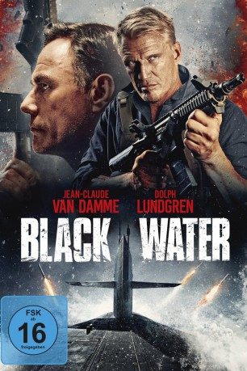
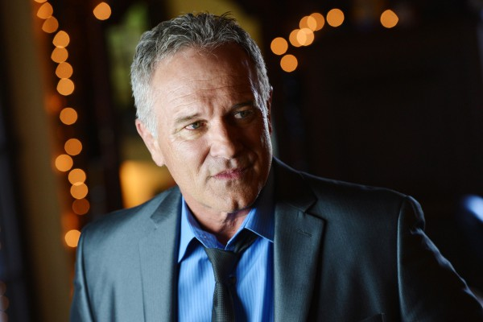
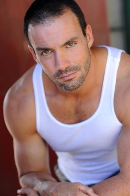

#9026 Black Water
 
 IMDB-Wertung: 4.6 / 10
IMDB-Wertung: 4.6 / 10  Metascore: 16
Metascore: 16 
Wheeler (Jean-Claude Van Damme) ist ein knallharter Geheimagent. Doch plötzlich wacht er als Gefangener in einem Atom-U-Boot der CIA auf. Wie er dahingelangt ist und wer ihn in diese missliche Lage gebracht hat, bleibt zunächst unklar. Um der Sache auf den Grund zu gehen und dem Verlies unter Wasser zu entkommen, schließt sich Wheeler mit dem sich ebenfalls an Bord befindenden Agenten Marco (Dolph Lundgren) und der taffen Cassie Taylor (Jasmine Waltz) zusammen. Ein gefährlicher Gefängnisausbruch beginnt, bei dem Wheeler und seine Mitstreiter stark in der Unterzahl sind. Dass es den zahlreichen Feinden nicht an tödlichen Waffen mangelt, macht die Sache auch nicht gerade einfacher. Doch das soll für den erfahrenen Agenten kein Hindernis sein...
Jahr: 2018
Dauer: 104 Minuten
FSK: 16
Land: Kanada Studio: Koch MediaTonspuren: DTS - ,
Untertitel: Deutsch,
Auflösung: 1080p (1920x804) Größe: 9799 MB
Genre: Action, Drama
Regisseur: Pasha Patriki
Drehbuch: Chad Law
Soundtrack: Spencer Creaghan
Darsteller:
 Jean-Claude Van Damme als Wheeler
Jean-Claude Van Damme als Wheeler Dolph Lundgren als Marco
Dolph Lundgren als Marco- Jasmine Waltz als Cassie Taylor
- Courtney B Turk als Melissa Ballard
- Patrick Kilpatrick als Ferris
 Kris Van Damme als Kagan
Kris Van Damme als Kagan- Tandi Tugwell als Riley
 Al Sapienza als Edward Rhodes
Al Sapienza als Edward Rhodes- Aaron O'Connell als Ellis
-  John Posey als Captain Darrows
-  Jean Claude Leuyer als Guard 2
- Vanessa Motta als Housekeeper
- Cathal Pendred als Dax
- James P. Bennett als Guard 006
 Lance E. Nichols als Buchanan
Lance E. Nichols als Buchanan- Tom DeNucci als Rankin
- David 'Shark' Fralick als Guard 8
- Aleksander Vayshelboym als Kingsley
- Adrian Lockett als Engineer #1
- Mark Sherman als Weddle
- Brett Murray als Agent 1
- Dale Liner als Guard 1
- Gary Watson als Robust Guard
- Tom Glynn als Crewcut
- Ryan D. Olson als Guard 5
- Tahj Vaughans als Sommer
- Ian Niles als Reed
- Cuong Alex Do als Chief of Boat
- Harry B Joachim als Drummond
- Andy Reboul als Engineer #2
 Christopher Heskey als Team Leader
Christopher Heskey als Team Leader- Eric Pettway als Extraction Team Member
Datei: X:\2018(A-F)\Black Water (2018, FSK16, 1920x804).mkv seit 08.06.2018
Festplatte: HD 2017(A-Z)-2018(A-F)
 Es gibt insgesamt 151 Filme in der Gruppe '2018(A-F)'
Es gibt insgesamt 151 Filme in der Gruppe '2018(A-F)'